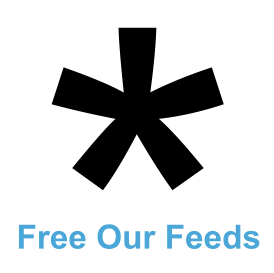

PfP✨ has now moved to https://protocolsforpublishers.com
Why?
We're on the path to a new kind of web, with an uncertain future: AI-based user agents are now a core interface to the internet for over half-a-billion active users.
This shift comes as platforms have increasingly seized control of the publisher-reader relationship: search engines are squeezing out web publishers to juice ad revenue, while social platforms have captured audiences with algorithmic reach and paid promotion.
The rise of new AI super-apps, in place of traditional browsers, is set to make this dynamic exponentially worse.
How can publishers engage in this platform shift beyond being a dataset to be scraped? How can we avoid being trapped by a new wave of mega-platforms? And how can publishers on the web reach real users, build lasting relationships, and continue to have a equitable business model?
We believe now is a critical time to get technologists & publishers working together to explore—and define—real answers to these questions.
Our first in-person event in NYC was a success! See some early coverage from Nieman Lab here. We are now planning future gatherings both online and in-person. To be added to the mailing list, and keep up with the movement, please fill out the form using the button below.
Sign up to stay in the PfP loop
What & when?
We're hosting a talk night followed by an in-person summit on at Betaworks in NYC, where we'll focus on how we can preserve an open, equitable web, where no one company holds the keys.
Showcase (August 20th)
Join us in New York City for an evening of presentations and open discussion, where protocol builders and publishers share their thinking about the future of the web. You'll hear a discussion about the challenges & opportunities in this space, updates on protocols like MCP, Web Applets, AT Protocol, and Web Payments, then jump into an audience-driven Q&A. Followed by a relaxed mixer with speakers and peers over drinks & light bites.
Talks
- Rupert Manfredi, Unternet
- Devin Gaffney, Graze
- Ivan Sigal, Free Our Feeds
One-day Summit (invite-only, August 21st)
An invite-only full day of focused conversations. We'll rotate through small-group discussions on real-world challenges, witness peer-led demos of protocol integrations, and spend time experimenting with tools. This will be an opportunity to explore real problems and opportunities, and lead to collaborations for future community work.
Community group
Following the summit, we'll be kickstarting a members community where participants will have access to expertise, resources, peer check ins, a future hackathon, and direct support for protocol questions and troubleshooting.
Who's behind this?
Unternet
Building a new kind of intelligent computer and the Web Applets open standard for taking actions on the web
Graze
Graze helps you build custom, curated, and algorithmic feeds on Bluesky powered by the AT Protocol.
Free Our Feeds
Free Our Feeds is a campaign to keep social media open, people-powered, and billionaire-proof.
Betaworks
Thanks to Betaworks for being in-kind sponsor by providing the venue!
Sponsorship & collaborations
If you're a publisher, protocol builder, or other supporter of a capture-resistant web futures and can't make it to New York, are interested in a future London, UK event — or want to get involved as a sponsor or presenter — please use the form here, or email hello@unternet.co.